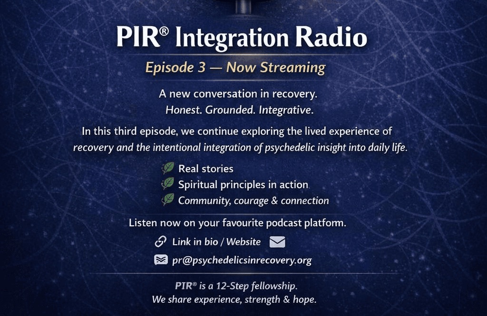
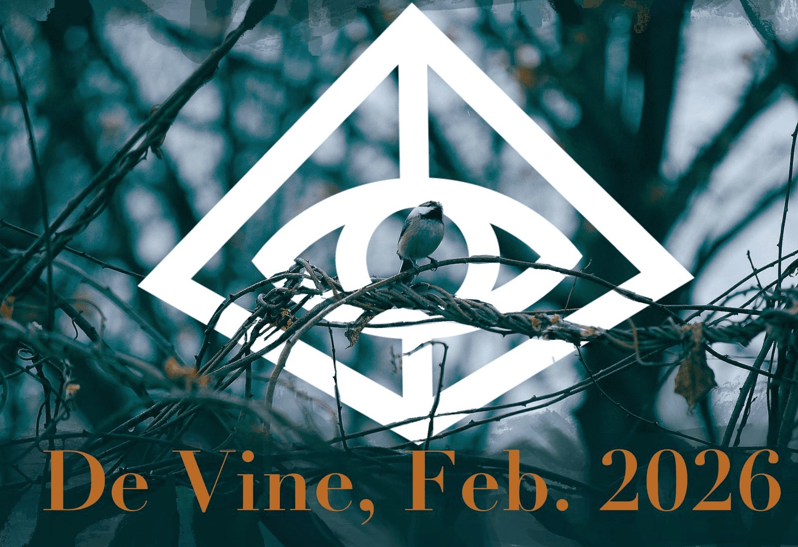
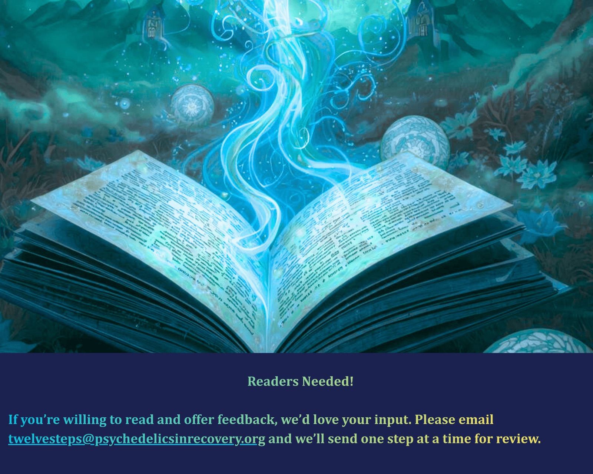

Some Thoughts on Step 2
Came to believe that a Power greater than ourselves could restore us to sanity.
We want to be well. We want to be whole. And still—we may find ourselves letting whatever is loudest decide, whatever is most urgent, whatever promises the quickest relief. One voice may say: hold it together. Another: burn it down. Another: just disappear for a while. And somewhere under all that, there might be something quieter—not competing, just waiting.
This is a particular insanity: not that we're broken, but that we're divided. That our inner life can feel like a committee and nobody is chairing the meeting.
Ache
The ache may not be primarily for sobriety. It may be for coherence. To stop arguing with ourselves in the same old circles. To stop calling it "a slip" when it keeps becoming a pattern. To stop bargaining with consequences like we're still the exception.
We don't need to become perfect. We need to become one. An integrated inner sense that can hold. So Step Two offers a simple possibility: maybe we don't have to manage our way into wholeness. Maybe wholeness is something we could be restored to—if we can stop insisting we do it alone.
Counterfeit
And here's what many of us may run into: it might not be the idea of a Higher Power that's hard. It may be what we do with it. We might make "God" into a prop. A permission slip. A stamp of approval on what we already wanted.
Sometimes we may bypass: float above the mess, quote the right things, declare ourselves "good," while the real work waits downstairs, arms crossed, unimpressed. If our spirituality makes us less accountable, more defended, more performative—it might not be restoring sanity. It may only be medicating the division.
Gathering
Step Two doesn't have to be a theological debate. It may simply invite us to admit the obvious: whatever we've been using as our highest authority may not have been able to make us whole. So we can become willing—not to adopt a new belief, but to allow a new center.
A Power greater than ourselves can mean something greater than our wounded perspective alone, greater than our panic, greater than our cleverness. Maybe it's God. Maybe it's the wisdom of the fellowship. Maybe it's nature, time, truth, love, reality. Maybe it's the deeper Self beneath the survival strategies—the place in us that doesn't have to hustle for worth.
Signs of Sanity
Sanity may show up small at first. No drama—just signals. A pause where there used to be reflex. A phone call we don't want to make but make anyway. A truth spoken plainly, without dressing it up. Sanity can look like our values starting to sound like instructions, not decorations. It can be the moment we stop confusing emotion with direction. When we can feel shame without turning it into a verdict. When we can feel fear without worshiping it.
And maybe the clearest sign: we become teachable again. Beginner's mind. Less "we already know," more "show us."
Not to an image. Not to a performance.
Not to the version of me that never needs help.
Restore me to sanity: to alignment, to coherence,
to a life where my words and actions can finally shake hands.
Hope — Member Stories
Members share how the spiritual principle of Hope impacts their recovery in the past and present.
Chasing Peace in Rainbows
I have always been a dreamer, the kind of person chasing the sunrise and sunset. But the first real moment of hope I remember came after a relapse. I woke up in a van at the bay. It had rained all night. The air was damp and quiet, and everything felt washed out. And then I saw it.
The sun was rising through the leftover rain clouds—the most amazing rainbow stretched across the water. The raindrops were still hanging in the air, catching the light. The whole sky looked lit from underneath. That rainbow felt alive, like it had been placed there just for me.
That was my message. It felt divinely guided. A direct transmission from my Higher Power and my future self. The rainbow stretching across the bay felt like it was stretching into my recovery, into my future. The colors were vivid, layered, undeniable. Different perspectives held together in one arc of light. It reminded me that my life could hold contrast and still be whole. That beauty could exist after destruction. That something brighter was possible.
When I started my plant medicine journey, something started to change. Contentment did not come from accomplishing something new. It came from stopping the chase. Now, I don't feel like I am running toward the next place or the next version of myself. I still love the sunrise. I still wait for the sunset. But I am not using them to escape my life. They are reminders.
What I hope for now is deeper than goals. I hope for a calm nervous system. I hope for patterns of fear to soften. I hope for a deep love of myself. And more than hope, I trust that the next right thing will be placed in front of me, just as reliably as the sun appears every morning. For the first time in my life, I am not chasing the horizon; I am discovering contentment where I am.
On Hope, Creativity, and Dreaming Without Dope
Hope is not just the cornerstone of survival. It is the very bedrock of life. Without it, one may as well shoot dope till death. Cranking up powders bought in the criminalized markets has its place; drugs protected me from pain so great.
Heroin comes from one of the creator's most beautiful poppies. I developed a profound "love" for it. Using heroin protected me from suicide. I found out that a lorry-load of hope and years without needling my body were not going to stop me from returning to daily heroin injections.
Thanks to the Getty Foundation, local drug workers, clinicians, and 12-step groups, I regained my strength enough to establish a charity to honor my life partner John M, who died from AIDS in March 1995, and to work to stay alive.
Ibogaine HCL improved my life recently—hugely. Without opiates, I struggle with sore lungs, joints, and hyperactivity. That's where Psychedelics in Recovery (PIR) comes into its own. PIR is a novel 12-step community that uses psychedelic medicine as well as listening and talk therapy. It's an extraordinary family where we all qualify because regardless of whether our addiction wears the mask of drugs, codependency, sex, food, and so on—at its core it is a loss of control of ourselves.
Without Community, Hope, and Creativity, I would not be alive.
Breaking the Silence: Psychedelic Therapy and Long-Term Recovery
I want to share my experience, strength, and hope to let others know that the therapeutic use of psychedelics is a viable path for recovery with tremendous benefits. I have been sober for over 19 years in AA.
In my 18th year of sobriety, I found myself at a psychic crossroads. I decided that I no longer wanted to take the duloxetine that I had used as a crutch against anxiety for well over a decade. I was an active member of my AA home group with a service position, a sponsor, and a sponsee, but I could not find the inner peace I thought I should have with almost 20 years of recovery.
I was interested in pursuing the use of psychedelics in a therapeutic setting, but it went against everything I'd learned in recovery. There was no way I was going to discuss trying psychedelics therapeutically in the rooms of AA. And thus, I found myself attending a Zoom meeting of Psychedelics in Recovery.
Using psychedelics in a controlled, intentional setting has dramatically shifted my sobriety. My anxiety levels have dropped dramatically, and I maintain this through breathwork and other methods of self-care. Looking back, I wish I had done this years ago because it might've saved me years of feeling lost without knowing the reason why.
It's unfortunate that the rooms of AA seem shut off from the idea of using psychedelics in recovery. The Big Book of AA was written in the 1930s. Much has changed since that time. You could be short-changing yourself if you didn't at least examine other options.
Hope, Perfect Hope: Psychedelics and the Return to Self
When I first entered recovery, I'm not sure what I hoped to achieve. I felt so broken—at a low ebb, a bottom. But I knew intuitively I was in the right place. I began using psychedelics intentionally eight years ago, and since then, I have achieved a great deal. I feel like I've gotten to know myself—the real me without the constant trauma responses.
Hope is a huge word for me. Hope is the foundation upon which I exist. It is faith's sister. If I didn't have hope, I'm pretty sure I wouldn't be alive. I am in recovery, attending three fellowships, and they are all based on hope.
What of that word Hope?
As sure as the sun rises
We can believe"
Through my deep recovery work with psychedelics, I know with an unwavering certainty that there is hope above all else. My life is part of a divine plan to help me return to source, in which we are all interconnected. So powerful a gift it was. Recovery helps me return to me. What a gift it has been.
Service Committee Updates
PIR®'s 12-Step Committee is finalizing a book that unpacks the Twelve Steps of Psychedelics in Recovery. Our fellowship is diverse—addiction, compulsion, codependency, over-functioning. Different outsides, similar insides. These steps are for anyone who's tired of cycles that cost integrity, peace, or a sense of self.

Two active step-study meetings are currently reading these steps — Tuesdays 1pm PST (Meeting ID: 835 3934 1211 · Passcode: 805679) and Wednesdays 4pm PST (Meeting ID: 836 9993 6187 · Password: 900897). Contact twelvesteps@psychedelicsinrecovery.org if you'd like to read and offer feedback.
This month, the PR Committee launched Integration Radio, releasing the first two episodes of the Journey of Healing series. Episode 3 has also now been released on Spotify, Apple Podcasts, and YouTube.
The committee is currently seeking a Digital Artist volunteer to join — interested individuals should reach out for more details on how to get involved.

The January GSR Meeting focused on strengthening unity across the fellowship, clarifying the relationship between the PIR fellowship and the nonprofit Board, and supporting greater transparency and communication throughout our service structure. The meeting welcomed Jason B., who shared a helpful presentation on PIR's service structure.
Key highlights from January: a Traveling GSR proposal to support unrepresented meetings; announcement of the PIR Convention in Denver, Oct 8–12, 2026; and the introduction of regular subcommittee reports at GSR meetings for improved communication flow.
We encourage all PIR meetings to have a GSR represented at the Subcommittee. If you know of a meeting without a GSR, consider this an opportunity to participate in service.
LitCom has been continuing the careful process of updating existing literature to reflect trademark alignment following PIR®'s newly registered trademark status. LitCom is also excited to formally establish its presence on the new Service Page subdomain and within the fellowship's newsletter.
LitCom warmly welcomes volunteers—no special expertise required, only a willingness to listen, collaborate, and serve with humility.
All work and projects in the Book Committee have been suspended pending a meeting with the board in three months' time. For any information, please contact forapirbook@gmail.com.
Open Service Positions
Email newsletter@psychedelicsinrecovery.org to volunteer or request technical training.
| Role | Committee / Group | Description | Schedule |
|---|---|---|---|
| Digital Artist | PR Committee | Create digital media content for PIR across multiple platforms including podcasts, website, newsletter, and literature. | Ongoing |
| Copy Editor | PR Committee – Newsletter | Edit member and committee contributions to De Vine; conduct interviews; assist with artwork and content choices. | Ongoing |
| Readers | 12-Step Committee | Read content, provide direct feedback, and attend 12-step Book Committee meetings. | Ongoing |
| Chairperson | London In-Person Meeting | Lead Meeting | Friday 1700 PT / Sat 0100 UCT |
| Chairperson | Monday Entheon | Lead meeting | 1700 PT / Tues 0100 UCT |
| Chairperson | Monday Meditation | Lead meeting | 0400 PT / 1200 UCT |

Announcements
